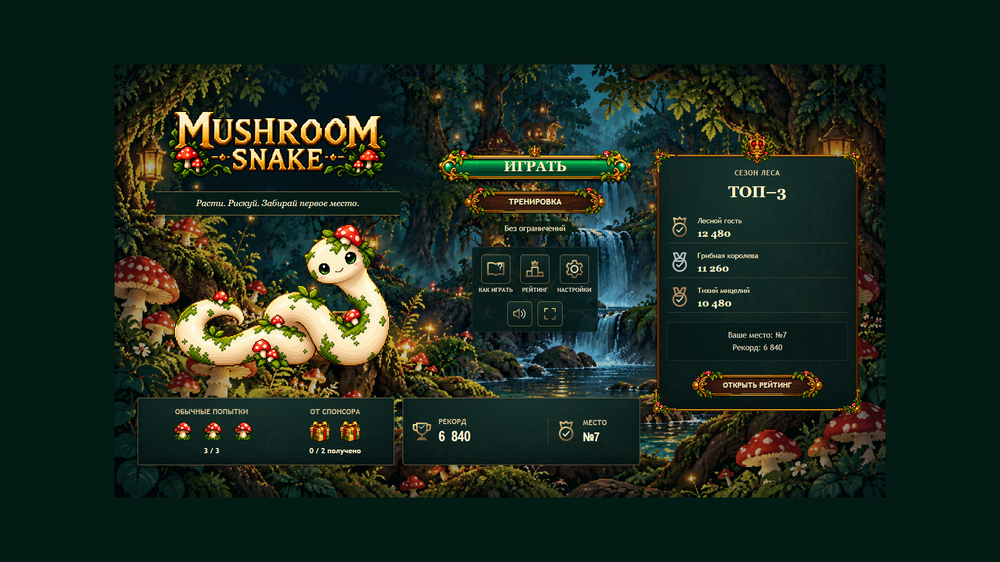
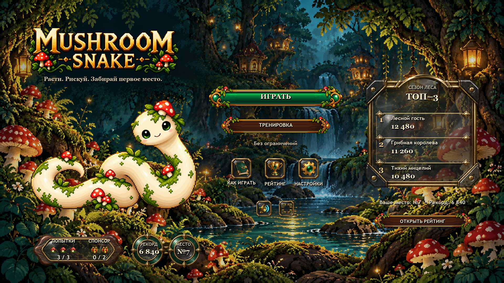
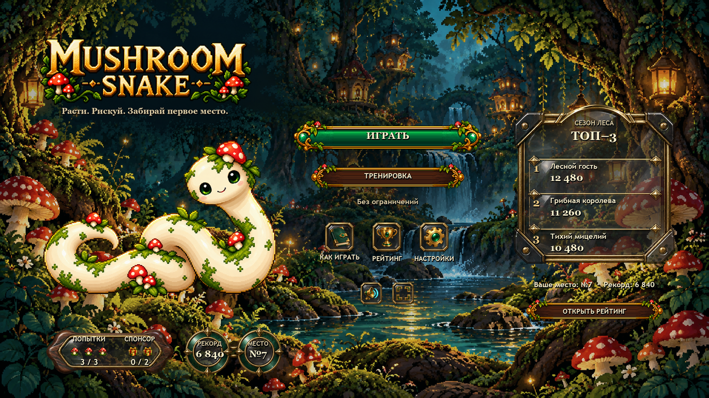
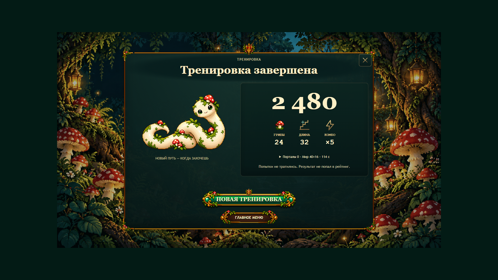
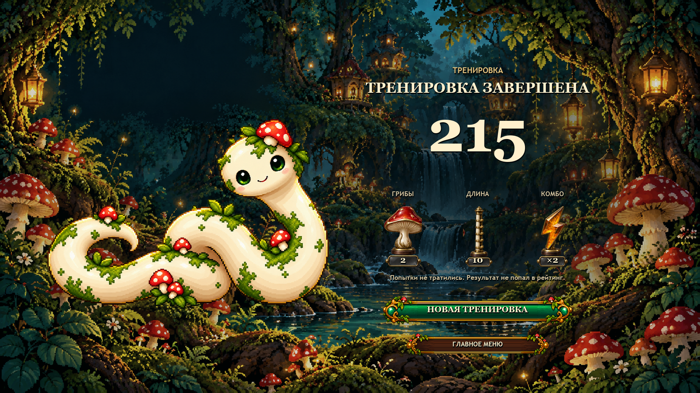
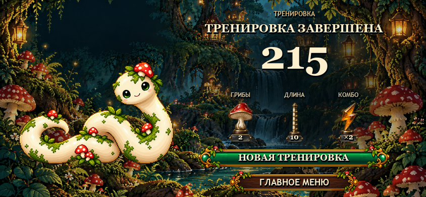
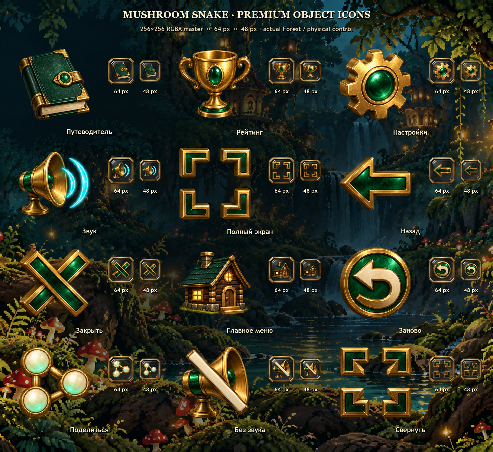
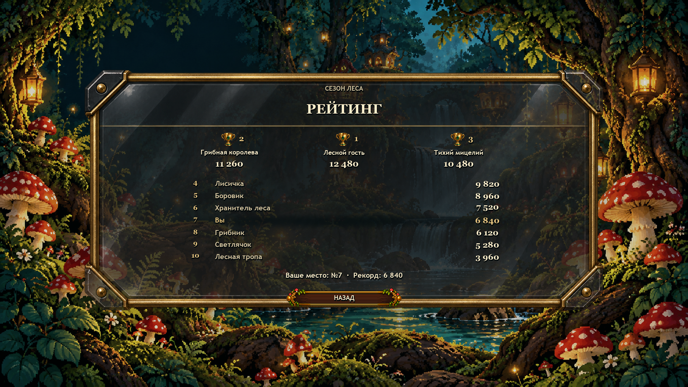
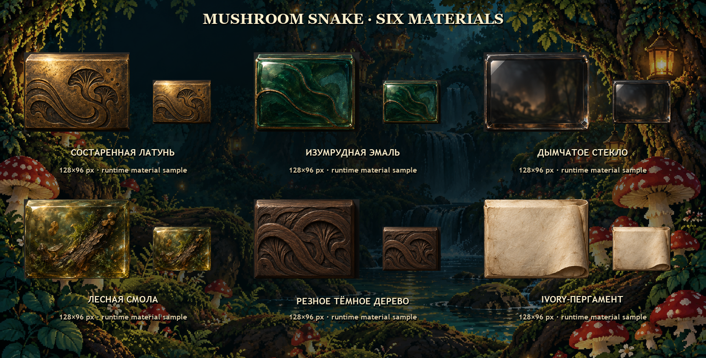

01 / Main · V4.3 → proposed premium


Main · 1366×768 native

Статический арт-проход. V4.3 НЕ утверждён. V5 требует человеческого арт-одобрения. Ни один концепт здесь не является работающим игровым экраном. Продукт, gameplay и опубликованный TEST не изменялись.
По умолчанию PNG показываются в native 1×. Горизонтальная прокрутка относится только к документу сравнения. Сам Result — один полностью готовый кадр 1920×1080 / 1366×768 / 844×390, без модального контейнера и без прокрутки содержимого.









Generated raster + разрешённая offline-композиция; точная типографика набрана отдельно. Лес, герой, логотип, кнопки и токены взяты из собственных существующих исходников проекта, не из человеческих скриншотов. Эти PNG — visual references, не новые production/runtime assets.